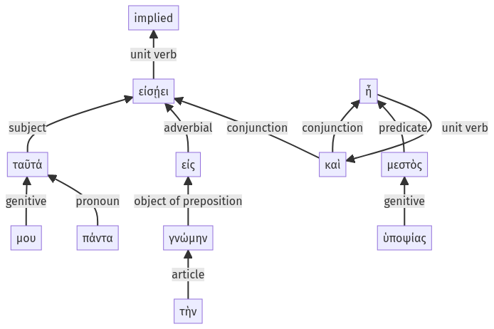

Lysias, Oration 1, 1.17.53-1.17.63a
1.17.1-1.17.52a | 1.18.1-1.18.29a
Sentence 44
1.17.53-1.17.63a
ταῦτά μου πάντα εἰς τὴν γνώμην εἰσῄει, καὶ μεστὸς ἦ ὑποψίας.
1 ταῦτά μου πάντα εἰς τὴν γνώμην εἰσῄει
1 καὶ μεστὸς ἦ ὑποψίας
ταῦτά μου πάντα εἰς τὴν γνώμην εἰσῄει, καὶ μεστὸς ἦ ὑποψίας.
Highlighting:
- connecting words
- unit verb
- subject
- object
Color code:
- Independent clause (level 1, intransitive verb)
- Independent clause (level 1, linking verb)
